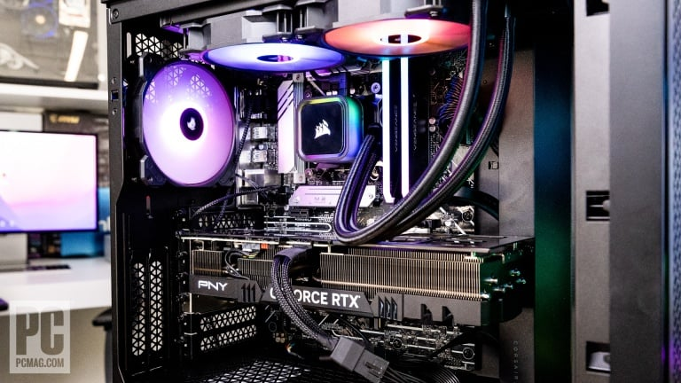
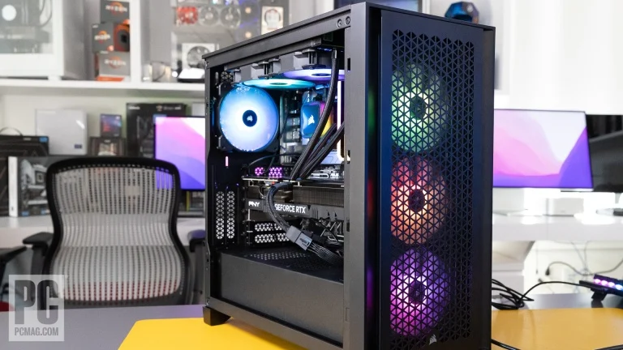
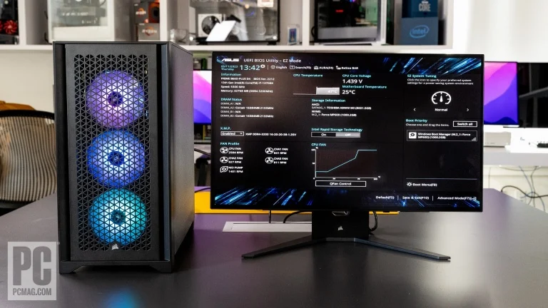
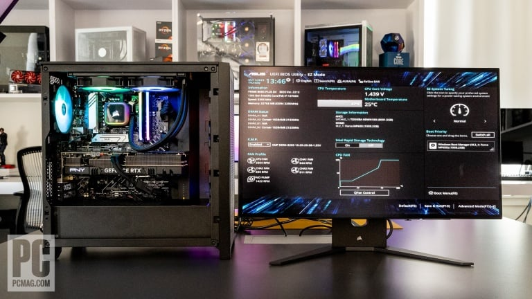
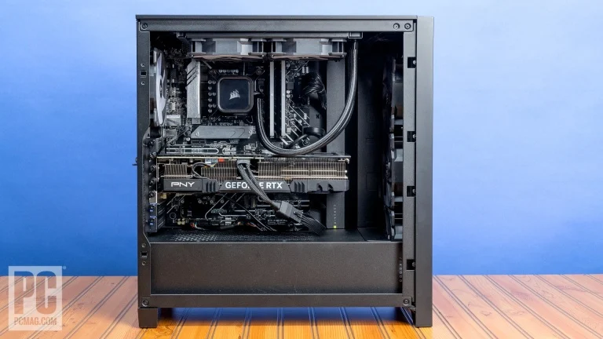

14. Boot to BIOS and Install the OS.
Okay, the moment of truth! Hit the power button and, with any luck, the system should cycle through its POST process and take you to the motherboard BIOS screen. Pat yourself on the back! Success!


Within the BIOS, you'll want to check that all your drives are detected; this may be on the initial screen or in an Advanced Mode view. Check that the full amount of memory you installed is showing up, in each of the slots, and that the CPU is detected correctly by name and there are no warnings about a lack of CPU cooler detection.


One immediate tweak you can make here is to set the memory speed via an XMP (Intel) or Expo (AMD) profile. You'll want to activate one or the other and choose one of the preset memory profiles that corresponds to what your RAM kit supports. Note that Expo in its early days has been connected to some overheating scenarios with certain CPUs; before activating Expo, be sure your motherboard BIOS has been updated to the latest version recommended on the board maker's site.

Assuming all is well from this point forward, it's time to install your operating system. Here we'll assume it's Windows 10 or 11 and that you purchased an OS license along with installation media, ideally a USB key. If you haven't, you can install an unlicensed version of Windows, but you'll need a Microsoft account to associate with the installation, as well as a licensed copy of Windows installed on another PC to enable you to create the installation media. To do that, you'll want to get a USB flash drive of at least 8GB and format it in FAT32 format; go to this Microsoft page to find the install-media creator utility for your particular version of Windows. You'll be prompted to install a utility on the licensed PC, which will walk you through the creation process. When done, you should have a bootable installer on the USB key.Once you've created the Windows install media, plug the USB drive into one of the ports in the back of the system and reboot. if the system just goes back to the BIOS, you may need to enable USB boot in the BIOS and or set the boot order to prioritize the USB key. The system should boot from the key the next time you try and take you to the start of the Windows install process. Follow the prompts, designate the drive onto which to install Windows (make sure it's the primary SSD), and make sure it’s partitioned as you like. If it’s new, you’ll likely need to create a new partition for Windows, which will auto-create a few smaller ones to accommodate the install.
And away you go. Along the way you'll be prompted to connect to the internet; plug in your Ethernet cable or try connecting via Wi-Fi if your system is so equipped. Follow the prompts and log into your Microsoft account when requested, or create one on the spot. Earlier versions of Windows 10 and 11 let you skip the Microsoft account and internet-connection part of the installation, but no more. The Windows image typically installs your Wi-Fi or Ethernet drivers, so connecting to the Net before you get to the desktop is possible. That said, if you run into issues or simply can't get internet where you're testing your build, a workaround may still exist for you to get to the Windows desktop without the Microsoft-account runaround.
After 20 or 30 minutes, you should see the Windows desktop. Unplug the USB drive and check the taskbar for the state of your internet access. As noted, Windows 10 and 11 are generally great about preinstalling drivers and enabling connectivity. If you're running into issues connecting to Wi-Fi, jack in by Ethernet if possible; otherwise, you may need to scrounge up your Wi-Fi card or dongle’s drivers on another PC to get connected to the net. With some older motherboards, you may also need to find an Ethernet driver before you'll be able to connect your new build to the net in wired fashion, so it can be crucial to have another working PC handy. Some motherboard vendors still include drivers on a CD; in the worst-case scenario, you may need to get an external USB drive to put the initial drivers on your system.
Once you have internet connectivity, however, run Windows Update repeatedly until everything is up to date. This will include both Windows components and any drivers you need along the way. If Windows doesn't, you'll also want to hit your GPU vendor's site for the latest driver for your graphics card. Once Windows Update returns no more action items, check Device Manager in the Windows Control Panel to see what else if anything needs a driver. In the case of our build, we also needed to install Corsair's iCUE utility to control the RGB lighting on the fans and CPU cooler.
That done, you're ready to install your browser of choice, your favorite gaming services (Steam and Epic, go to town!), and the productivity apps you can't live without. Enjoy and be proud: You're all rigged up, and you did it yourself.
